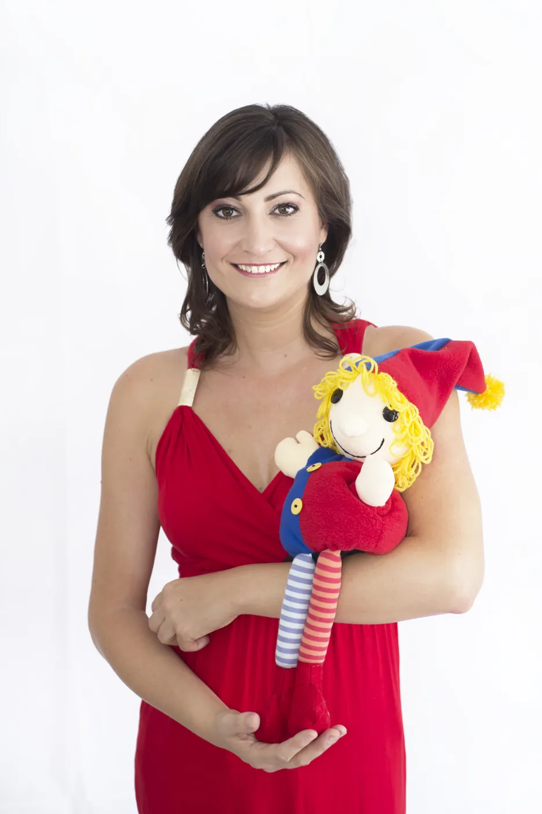
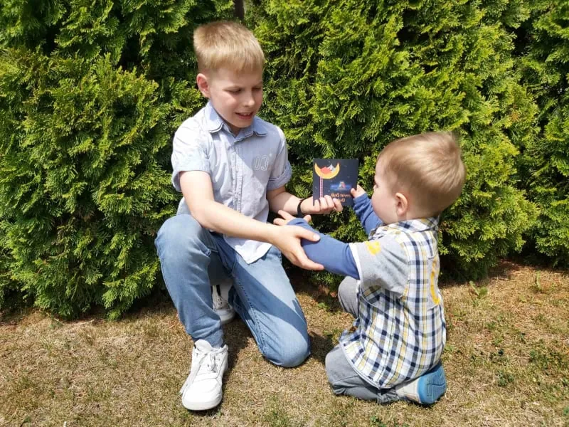
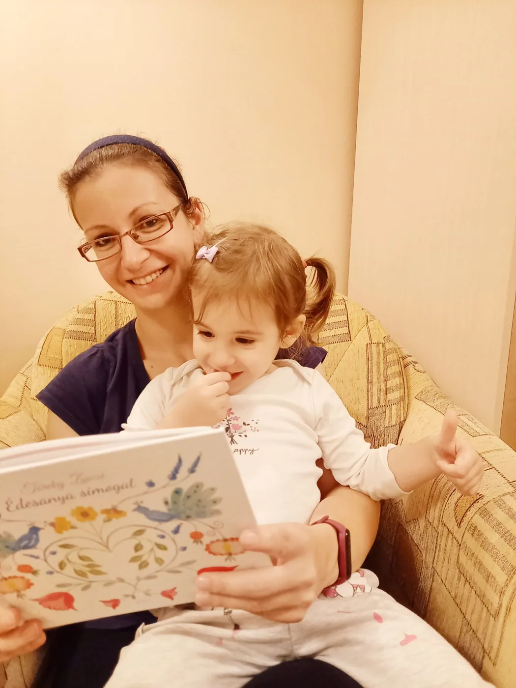

A hangok érintése
Mesekönyvek, gyermek CD-k, ajándékok és koncertjegyek az Aranykapu Zenekartól – gyönyörű magyar népdalokkal és saját aranykapus dalokkal.
Aranymisi és barátai mesefüzet
Arany Misi és barátai bábos mesekoncertünk az Aranykapu zenekarral 2020-ban indult el.
Azóta is töretlen sikerrel játsszuk a 0-7 éves korosztálynak és szüleiknek.
Ebből a kedves történetből született meg Irsai Tenzi akvarell-festményeivel mesefüzetünk.
A mesejáték összes dala megtalálható a könyvben, QR kód segítségével meghallgatható.
Olyan, mintha hazavinnétek a koncertet.
Édesanya simogat
Fejezetek a kisgyermekkori zenei nevelésről.
Ajánló:
” Töreky Zsuzsi zenepedagógus a nevelés legegyszerűbb, mégis legfontosabb formájához, a közös játékhoz ad nem csak útmutatót, hanem segít eligazodni a népköltészet gyermekmondókáinak szerteágazó, de gazdagon kitáblázott útjain is. Zsuzsi gondosan és minden oldalról jól láthatóan helyezi ki könyvében az útjelzőket a szülők számára. “
Menjen hát mindenki bátran, kanyarodjon, gyorsítson vagy épp lassítson vele együtt! Álljon is meg, ha kell. Közben pedig szóljon a muzsika, lüktessenek a mondókák és játékdalok ritmusai!
Kedvencek minden napra
A hangok érintése
Pár hangon billegő, súgó-búgó-simogató dalocska. 😊🥰
De érzelmileg a legtöbbet adja anyának és gyermekének, a legközelebb hozza őket egymáshoz.
Ezért is született meg Aludj, Szívem aludj című altatódalos cd-nk. Gyönyörű magyar népdalokkal (melyek komplex érzelmi- és értelmi tudást hordoznak), és saját aranykapus dalainkkal."


Aludj szívem, aludj!
Amivel a gyermekeid egy gyönyörű álomvilágba látogatnak.
16 altatódal és mondóka
Gyere el koncertünkre!
Eddigikiadványaink


Rólunkmondták
Aludj szívem, aludj!Ez a CD a könnyű elalvás záloga a babáknak. Csodálatos dalaival könnyedén álomba ringatja a gyerekeket. Mikor megjelent ez az album, elsők között vásároltam meg. Azóta minden nap ezekre a dalokra ringatom álomba a kisfiamat. Ezer hála érte az Aranykapu zenekarnak💖💖💖

Zsuzsiból és az egész Aranykapu zenekarból árad a báj, a profizmus és a könnyedség. Minden kisgyermekes családnak teljes szívemből ajánlom 🙂
Várakozás!Ez a csodálatos karácsonyi album bearanyozza a karácsony előtti időszakunkat és ünnepi köntösbe öltözteti lelkünket. November elejétől egészen január végéig mindennapjaink részévé válik. Már alig várom várom, hogy újra elővehessem💞💞💞 Köszönet érte Nektek🤗🤗🤗.
Zsuzsit tavaly nyáron ismertük meg, de olyan mintha mindig is ismertük volna. Leila is hamar a bizalmába fogadta, pedig eleinte mindenkivel jóideg tartja az 5 lépés távolságot. A kerekítő foglakozásoknak köszönhetően ő is jóval nyitottabb, bátrabb lett és gyorsabban barátkozik. Zsuzsi Művésznőnek hívja csak, mert mindig megvillantotta valamelyik művészi oldalát a foglalkozásokon tánc, vagy ének formájában. Mikor megtudtuk, hogy Zsuzsi könyvet ír, egyértelmű volt,hogy nekünk se hiányozhat a polcról. Ahogy megkaptuk egyből el is kezdtük olvasni. Természetesen nagy kedvenc lett, hisz mikor olvassuk újra ott ülünk Zsuzsival és a többi kis csemétével, szülővel együtt a szőnyegen.

Jó tudni
Miért érdemes az Aranykapu lemezeit hallgatni?
A kisgyermekek zenei nevelése egész életükre kihat. Nagyon fontos, hogy a szülő milyen zenével kínálja meg, mit hallgatnak otthon. Az Aranykapu cd-inek dalait nagybőgő, zongora, cayon, gitár, harangjáték, fife, csörgők kísérik, tematikájuk az életkori sajátosságoknak megfelelő, kellemes hangzásúak, igényesen hangszereltek.
Miért éppen őket?
A gyermeklemez piacán egyedi hangzásúak, a lemezek hosszútávúan is hallgathatóak, a magyar néphagyományból merítve népdalok és saját dalaik váltakoznak, izgalmas hangszer párosítással.
Hogy találom meg a Zenekar hivatalos weboldalát?
Az Aranykapu Zenekar hivatalos weboldala:
https://www.aranykapuzenekar.hu